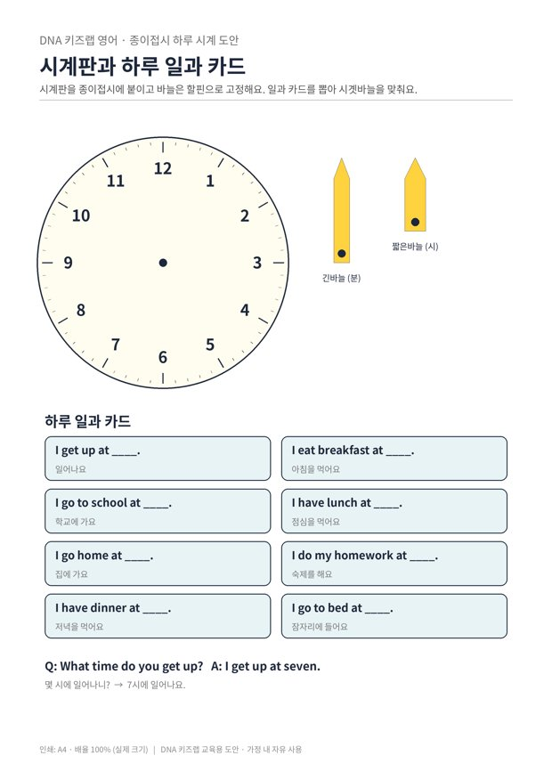

전체 단원 › 실험·활동 › 5학년 1학기 영어
종이접시 하루 시계

종이접시로 시계를 만들고, 일과 카드를 뽑아 바늘을 돌리며 몇 시에 무엇을 하는지 영어로 말해요.
30분 · 난이도 ★★☆ 보통
준비물
- 종이접시 1개 — 없으면 상자 판을 동그랗게 오려요
- 시계 도안 — 시계판, 바늘 2개, 일과 카드 8장 (A4 1장)
- 할핀 1개 — 바늘이 돌아가게 고정해요
- 풀, 가위 — 바늘은 상자 판에 붙여 오리면 튼튼해요
하는 방법
- 시계 만들기
시계판을 오려 종이접시에 붙이고, 긴바늘과 짧은바늘을 가운데에 할핀으로 고정해요. - 일과 카드 채우기
카드 8장의 빈칸에 실제 내 시각을 적어요. 예: I get up at seven. - 묻고 바늘 돌리기
부모님이 카드 한 장을 뽑아 "What time do you get up?" 하고 물으면, 아이가 바늘을 돌려 시각을 맞추고 대답해요. - 순서대로 하루 말하기
카드 8장을 시간 순서로 늘어놓고, 아침부터 밤까지 내 하루를 영어로 이어서 말해요.
5~6학년 영어는 자신의 생활을 문장으로 말하고 쓰는 단계로 넘어갑니다. 실제 아이의 하루로 문장을 만들면 외운 문장이 아니라 '내 이야기'가 되어 훨씬 잘 기억해요. 아날로그 시계 읽기 복습도 함께 됩니다.
학교 교육과정 연결
- [6영02-07] 일상생활 주제에 관한 담화나 글의 세부 정보를 간단한 문장으로 묻거나 답한다.
- [6영02-05] 주변 장소나 위치, 행동 순서나 방법을 간단한 문장으로 설명한다.